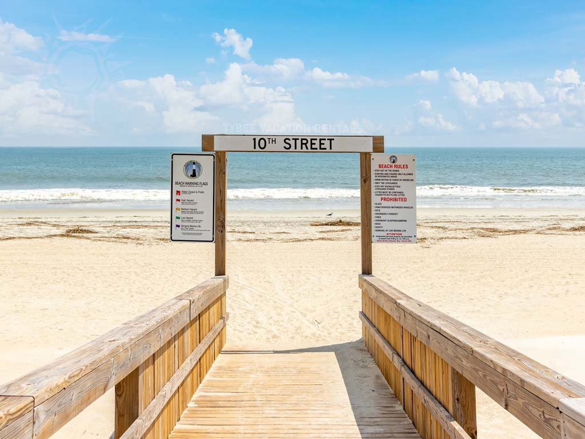

Photo pair 1


geometrically_supported
Shared-image context: SHARED IMAGE: shared-6162 appears in 3 Airbnb listings; possible generic imagery or related hosts, not property-specific evidence
Hash / geometric comparison evidence
{
"hash_hamming": {
"dhash": 2,
"phash": 4,
"center_phash": 0
},
"hash_min": 0,
"priority_policy": "obvious_v2_both_phashes_le_6_realtor_shared_excluded",
"exact_hash_hamming": {
"phash": 4,
"center_phash": 0
},
"orb_ransac": {
"score": 0.892,
"detail": {
"inliers": 892,
"ratio_matches": 892,
"coverage": 0.4108419895061833,
"homography": [
[
0.9999308441976762,
-0.0001017752028112048,
0.05309444169386001
],
[
-1.2385629434177477e-05,
1.000033624658338,
-0.010895690081330492
],
[
-1.1206854636271038e-07,
4.481289413390709e-08,
1.0
]
]
},
"comparison_ms": 8.163393998984247,
"feature_lookup_or_extraction_ms": 64.78669999341946
}
}